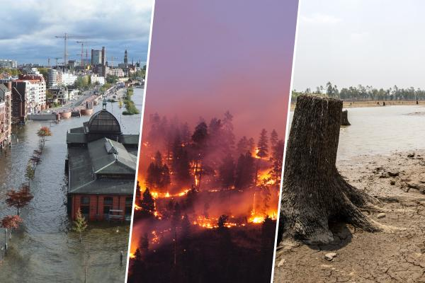

de gevolgen van klimaat opwaring
hogere temperaturen verstoren meer en meer ecosystemen, waardoor soorten sneller uitsterven en biodiversiteit afneemt.
Extreme weersomstandigheden, zoals hittegolven, droogtes, orkanen en hevige regenval, worden ook steeds vaker en intenser.
Dit leidt tot mislukte oogsten, voedseltekorten en gezondheidsrisico's door hittegerelateerde ziekten.
Klimaatverandering beïnvloedt ook de beschikbaarheid van drinkwater door de verandering in neerslagpatronen.
Klimaatopwarming heeft verstrekkende gevolgen voor onze planeet, die nu al zichtbaar zijn en in de toekomst steeds ernstiger zullen worden.
Door de stijging van de gemiddelde temperaturen smelten gletsjers en poolkappen sneller, wat leidt tot een stijging van de zeespiegel.
Dit bedreigt kustgebieden en laaggelegen landen, waardoor miljoenen mensen hun huis kunnen verliezen door overstromingen.

Humanitair
Klimaatverandering heeft verstrekkende sociale en economische gevolgen, die onze manier van leven wereldwijd beïnvloeden.
De stijgende zeespiegel zorgt ervoor dat kustgebieden dure aanpassingen moeten ondergaan om zich te beschermen tegen overstromingen.
Hele dorpen en steden kunnen gedwongen worden om te verhuizen vanwege deze bedreiging.
De hittegolven maken het moeilijk om te werken, wat productiviteitsverlies en gezondheidsproblemen veroorzaakt.
Watertekorten worden steeds vaker een probleem, vooral in droge gebieden, wat kan leiden tot conflicten over toegang tot deze beperkte bron. Daarnaast bedreigt klimaatverandering de landbouw: oogsten worden minder voorspelbaar en de productiviteit daalt, wat een directe impact heeft op de voedselprijzen.
Hierdoor worden basisproducten duurder, wat vooral mensen met een laag inkomen raakt.
Ziekten verspreiden zich gemakkelijker door hogere temperaturen, en extreme weersomstandigheden zoals orkanen en droogtes drijven meer mensen in armoede.
De gevolgen van klimaatverandering zijn al voelbaar, en zonder drastische maatregelen zal de impact alleen maar toenemen.